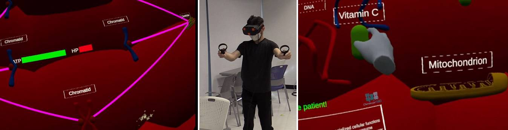

Embodied & immersive learning
How can gestures and purposeful interaction in VR and AR help learners understand ideas that are difficult to see or experience?
LEARNING SCIENCES · EDUCATIONAL TECHNOLOGY
I design and study learning environments where gestures, dialogue, and immersive experiences help learners make sense of complex ideas.
Recruiting students01 / About
I am a learning scientist and Assistant Professor in the Department of Education at Sungkyunkwan University. My research brings together embodied cognition, immersive learning, artificial intelligence, and multimodal learning analytics.
I investigate how learners use their bodies, language, and digital tools to understand scientific ideas, collaborate, and exercise agency. Working with teachers and interdisciplinary collaborators, I develop learning simulations and study their use in authentic educational settings through design-based research and mixed methods.
I earned my Ph.D. in Curriculum & Instruction at the University of Illinois Urbana-Champaign in the Digital Environments for Learning, Teaching, and Agency (DELTA) program, advised by Robb Lindgren and Mike Tissenbaum. Before joining SKKU, I was an Assistant Professor at Utah State University and a Postdoctoral Research Associate at the University of Florida.
02 / Research
How can gestures and purposeful interaction in VR and AR help learners understand ideas that are difficult to see or experience?
How should conversational and embodied AI agents respond to learners while supporting explanation, questioning, and agency?
What can movement, gaze, interaction logs, and dialogue reveal about the learning process when interpreted in context?
How do emotions, shared representations, and social interaction shape collaborative reasoning in games and learning communities?
Featured project · Virtual reality

ChromosoME is a VR simulation that lets learners participate in mitosis through purposeful hand interactions. Developed in collaboration with high school teachers, it connects biological mechanisms to actions such as aligning and separating chromosomes.
Current work extends the simulation with conversational AI companions and multimodal interaction data to study learners’ questions, explanations, and activity. A related line of research examines how the order of paper-based and VR materials shapes learning and the interpretation of interaction logs.
Current research
Designing AI avatars that connect dialogue and content-relevant gestures with learners’ actions in immersive science environments. The work examines learner questioning, explanations, attention, and the design of adaptive support.
Collaborative prototype · Middle school science
A teacher-informed VR prototype for middle school physiology. This project connects immersive activity with ideas about human body systems and brings classroom learning needs into the design of science simulations.
Collaborative research · Statistical sensemaking
A hands-on platform for exploring statistical ideas by manipulating values, samples, and distributions, with visual feedback and an optional AI coach. My collaborative research interests include how interaction traces reveal learners’ reasoning and how learners revise their predictions. A related narrative RPG prototype is being developed by collaborators.
Collaborative project · Astronomy
Connections of Earth and Sky with Augmented Reality explores small-group astronomy learning across immersive headsets and tablets. My work investigates how shared views, gestures, and dialogue support collaborative problem solving.
Explore the projectCollaborative project · Immersive 3D drawing
Immersive Production of Representations Exploring Science Sketching is a VR environment where learners draw, manipulate, and resize three-dimensional scientific representations. This collaborative project connects freehand sketching with immersive spatial interaction and access across VR and non-VR devices.
Explore the projectCollaborative project · Biochemistry
Studying how gesture-controlled simulations and haptic technologies help students interpret dynamic scientific representations, including biochemistry and dynamic equilibrium.
Explore the projectCollaborative project · Serious games
A whole-class simulation where student groups build and sustain cities. My research examines collaborative reasoning, complex-systems understanding, and when anger supports or disrupts productive discussion.
Explore the projectCollaborative project · AI in education
Research on learning by teaching with AI agents in mathematics. This work examines interaction patterns, the relationship between learner agency and AI authority, and the design of equitable AI-supported learning.
Explore the project03 / Publications
Journal articles and conference papers on immersive learning, AI, collaboration, and learning analytics. Visit Google Scholar for the broader publication record.
British Journal of Educational Technology, 57(4), 896–923
International Journal of Computer-Supported Collaborative Learning, 21, 173–204
First published online in 2025
Distance Education, 47(2), 268–291
First published online in 2025
Language and Education, 40(2), 512–535
First published online in 2025
CHI 2026 Extended Abstracts, Article 700, 1–5
International Conference of the Learning Sciences (ICLS), 1438–1442
International Conference of the Learning Sciences (ICLS), 2795–2797
Artificial Intelligence in Education (AIED), 200–214
Journal of Computing in Higher Education, 37(4), 1341–1370
Education and Information Technologies, 30, 5561–5588
First published online in 2024
International Conference of the Learning Sciences (ICLS), 781–789
Immersive Learning Research—Academic (iLRN), 147–153
Best Extended Abstract Nominee
Interactive Learning Environments, 32(9), 5822–5835
First published online in 2023
CHI 2024 Extended Abstracts, Article 58, 1–6
International Conference of the Learning Sciences (ICLS), 1666–1669
IEEE Transactions on Learning Technologies, 16(6), 1141–1153
International Conference of the Learning Sciences (ICLS), 1126–1129
Communication Studies, 72(6), 994–1016
Learning Analytics and Knowledge (LAK), 173–183
04 / Background
Department of Education, Sungkyunkwan University
Instructional Technology & Learning Sciences, Utah State University
Instructional Technology & Learning Sciences, Utah State University
University of Florida
University of Illinois Urbana-Champaign · DELTA program
Sungkyunkwan University
Andong National University
05 / Join the research
Recruiting students
I welcome inquiries from prospective master’s and doctoral students, as well as undergraduate students interested in research at Sungkyunkwan University.
If you are curious about learning sciences, educational AI, VR/AR, embodied cognition, serious games, or multimodal learning analytics, I would be glad to hear from you.
Students with backgrounds in education, psychology, design, computer science, or related fields are welcome. Experience with Unity/C#, Python/R, qualitative analysis, or learning design can be helpful, and a willingness to learn matters.
Please contact me to discuss fit and current opportunities. Graduate admission follows SKKU’s official application process.
06 / Contact
For research collaborations, student inquiries, and conversations about immersive and AI-supported learning.
Department of Education · Sungkyunkwan University
Seoul, South Korea